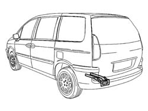
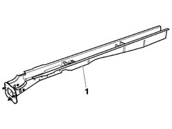
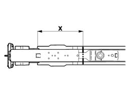
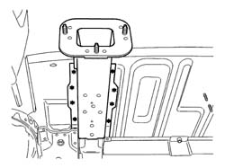
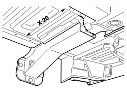
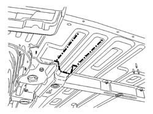
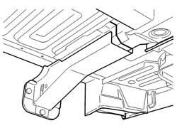
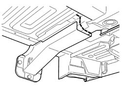
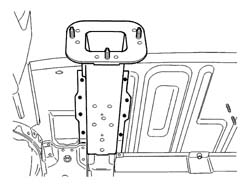

7210B61 BOOT FLOOR PAN RAIL PARTIAL
- Path
- Procedures > 72 PANELS AND FRAME > 7210 REMOVING REFITTING > 7210B STRUCTURE ELEMENTS-CENTRAL AND REAR PART > 7210B61 BOOT FLOOR PAN RAIL PARTIAL
- Kind
- repair procedure (removal / refitting; the operation number is the code)
- Applies to
- all engines; all production periods
- Interactive page
- https://sloeber94.github.io/elrnDB-fUlss/en/#/179007962
Applies to: all engines; all production periods
Applies to: all engines; all production periods
 Removing
Removing
 Refitting
Refitting- Work on the component illustrated making sure previously that the equipment illustrated below is available.

Applies to: all engines; all production periods
1. Assembled rear side member

Applies to: all engines; all production periods
- Check that the components connected are not distorted by checking the bodyshell alignment measurements using suitable equipment (gauges, templates or jigs).
- Make the cuts shown in the diagram on the assembled rear side member using a power saw.

Applies to: all engines; all production periods
- Reduce the spot welds shown using a chamfering machine.

Applies to: all engines; all production periods
- Proceed with the cutting as illustrated in the diagram and detach the component.

Applies to: all engines; all production periods
- Remove the residues from the bodyshell using a disc grinder and apply electro-galvanizing paint.

Applies to: all engines; all production periods
Refitting
Removing- Position the side member and fasten it using self-locking clamps then, after having checked that the alignment is correct, make the final cut and proceed with the fitting as described below.
- Remove the residues from the replacement parts using a disc grinder and apply electro-galvanizing paint.

Applies to: all engines; all production periods
- Proceed with the MIG welding in the areas illustrated in the diagram then grind the welds using a disc grinder.

Applies to: all engines; all production periods
- Using a spot welder, weld the lower part of the side member as illustrated in the diagram.

Applies to: all engines; all production periods
- Grind the welds using a disc grinder.
- Check that the welded component is correctly positioned.
- Apply electro-galvanizing paint to the ground parts.
- Proceed with waxing the box sections and applying a layer of gravel protection.